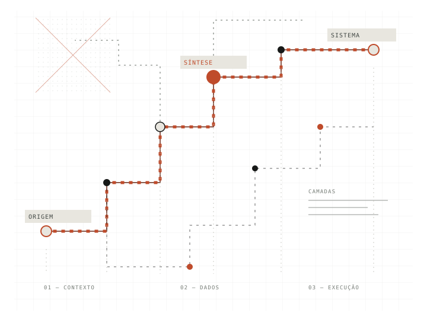

01
3L0 Vision
Um sistema de interpretação documental para transformar arquivos operacionais em informação estruturada e utilizável por fluxos empresariais.
PORTFÓLIO / 2026
Investigo problemas complexos e construo tecnologia para torná-los compreensíveis, operáveis e verificáveis.

FIG. 01 — FLUXO, CONTEXTO, SISTEMA“Tecnologia só tem valor quando entende o contexto em que precisa funcionar.”
Uma prática construída entre o mundo físico e o digital.Minha trajetória passa por operações, logística, empreendedorismo e desenvolvimento de software. Essa combinação moldou a forma como abordo tecnologia: começo pelo funcionamento real do problema, não pela ferramenta da vez.
Hoje, concentro meu trabalho em arquitetura de sistemas, engenharia de dados e inteligência artificial aplicada. Desenho componentes, conecto capacidades e construo mecanismos de validação, sempre distinguindo hipótese, protótipo e entrega comprovada.
Projetos selecionados por representarem diferentes frentes de investigação e execução. O estágio de cada iniciativa está indicado sem confundir pesquisa com produto concluído.
Um sistema de interpretação documental para transformar arquivos operacionais em informação estruturada e utilizável por fluxos empresariais.
Pesquisa aplicada em mecanismos de evidência, verificação independente, consenso e atestação de estados delimitados.
Motor independente de custos e inventário industrial, concebido para integrar-se a sistemas consumidores por contratos e escopos definidos.
Observatório de dados eleitorais para organizar pesquisas, fontes, metodologia e participação pública com transparência informacional.
A seleção apresenta o escopo público de cada iniciativa. Código, dados de clientes, propriedade intelectual e detalhes de implementação são compartilhados somente quando públicos e autorizados.
Trabalho em ciclos curtos, com decisões explícitas e evidências que permitam entender o que foi feito, por que foi feito e até onde o resultado pode ser considerado confiável.
Domínio, contexto, usuários, restrições e resultado esperado.
Arquitetura, responsabilidades, contratos e riscos.
Construção incremental, integração e testes.
Critérios de aceite, evidências e limites conhecidos.
Decisões documentadas e aprendizado reutilizável.
Como coordenar agentes com memória, ferramentas, autonomia limitada, avaliação e rastreabilidade?
Como converter alegações e evidências em estados verificáveis sem transferir a decisão para um único componente?
Como aproximar dados, conhecimento de domínio e automação das decisões que acontecem no mundo real?
Aberto a projetos de engenharia, pesquisa aplicada, arquitetura de soluções e colaboração técnica.